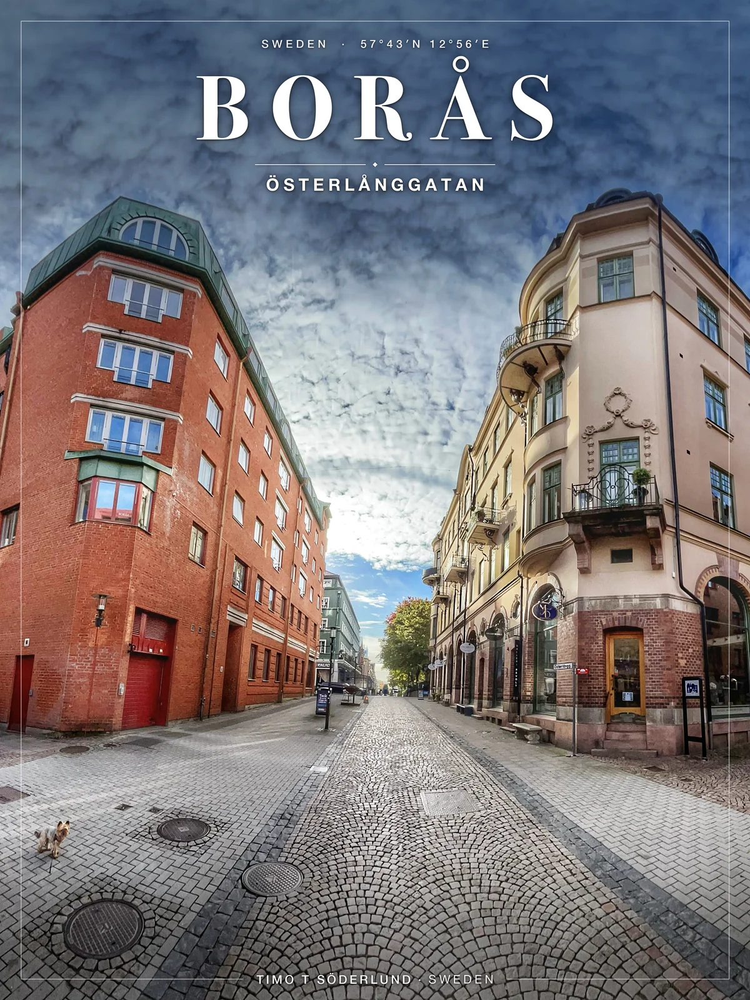

Österlånggatan
Österlånggatan Street · Borås, Sweden
English
A classic evening perspective down Österlånggatan in the heart of Borås, Sweden. Warm streetlamp light grazes historic stone facades and ornate upper-floor gables while a solitary figure walks into the quiet depth of the street. Framed with medium-format precision and classic darkroom tonal depth, this piece from Borås Poster Project 2026 celebrates everyday architectural poetry in Boras, Sweden.
Svenska
Ett klassiskt kvällsperspektiv längs Österlånggatan i hjärtat av Borås. Varmt gatuljus sveper över de historiska stenfasaderna och gavlarna medan en ensam fotgängare vandrar in i gatans lugna djup. Inramad med klassisk tonalitet och skärpa hyllar denna poster ur Borås Poster Project 2026 vardagens arkitektoniska poesi i centrala Borås.
Photographer & Edition: Timo T Söderlund · Borås, Sweden (2026)